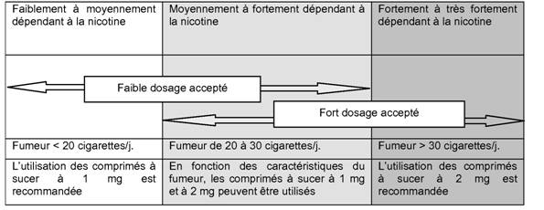

RÉSUMÉ DES CARACTÉRISTIQUES DU PRODUIT
ANSM - Mis à jour le : 26/08/2014
NICOTINELL MENTHE 2 mg, comprimé à sucer
2. COMPOSITION QUALITATIVE ET QUANTITATIVE
Nicotine ........................................................................................................................................ 2,000 mg
Sous forme de bitartrate de nicotine dihydraté .................................................................................. 6,144 mg
Pour un comprimé à sucer.
Excipients: aspartam (0,01 g), maltitol (0,9 g), sodium (9,8 mg)
Pour la liste complète des excipients, voir rubrique 6.1.
Comprimé à sucer.
Comprimé blanc, aromatisé à la menthe, rond et biconvexe.
4.1. Indications thérapeutiques
Ce médicament est indiqué dans le traitement de la dépendance tabagique afin de soulager les symptômes du sevrage nicotinique chez les sujets désireux d'arrêter leur consommation de tabac.
NICOTINELL MENTHE 2 mg, comprimé à sucer est à utiliser chez les sujets ayant de sévères symptômes de sevrage tabagique.
Une prise en charge adaptée améliore les chances de succès à l'arrêt du tabac.
4.2. Posologie et mode d'administration
Adultes et personnes âgées:
Les patients doivent s'arrêter de fumer complètement durant le traitement avec ce médicament.
NICOTINELL MENTHE 2 mg, comprimé à sucer est plus particulièrement adapté aux fumeurs fortement ou très fortement dépendants à la nicotine ou ayant déjà échoué dans une tentative d'arrêt du tabac avec substitution nicotinique.
Le dosage initial sera personnalisé en fonction de la dépendance nicotinique du sujet. Le dosage optimal est décrit dans le tableau ci-après:

En cas d'apparition d'effets indésirables observés à l'utilisation des comprimés dosés à 2 mg, utiliser les comprimés dosés à 1 mg.
Sucer un comprimé à chaque fois qu'est ressenti le besoin de fumer. La dose initiale est d'un comprimé toutes les 1 à 2 heures.
La consommation usuelle est de 8 à 12 comprimés par jour, et ne doit en aucun cas dépasser 15 comprimés par jour.
Conseils d'utilisation:
· Sucer le comprimé jusqu'à ce que le goût devienne fort,
· Placer alors le comprimé entre la gencive et la joue,
· Recommencer à sucer le comprimé lorsque le goût s'est estompé,
· Ce processus sera adapté individuellement et devra être répété jusqu'à dissolution complète du comprimé (environ 30 minutes).
La durée du traitement est individuelle. Normalement, ce traitement doit durer au moins 3 mois. Après 3 mois, le sujet réduit progressivement le nombre de comprimés ou peut passer aux comprimés dosés à 1 mg puis réduire progressivement le nombre de comprimés. Le traitement est arrêté lorsque la consommation est réduite à 1 ou 2 comprimés par jour. Il est généralement recommandé de ne pas utiliser les comprimés à sucer au-delà de 6 mois. Toutefois, certains ex-fumeurs peuvent avoir besoin d'un traitement plus long afin d'éviter les rechutes.
Il est conseillé au patient ayant utilisé un substitut nicotinique au-delà de 9 mois de demander conseil auprès d'un professionnel de santé.
Les conseils d'un professionnel de santé peuvent aider les fumeurs dans l'arrêt du tabac.
La prise de boissons acides telles que café ou soda peut diminuer l'absorption de la nicotine au travers de la muqueuse buccale. Ces boissons doivent être évitées dans les 15 minutes précédant la prise du comprimé à sucer.
Enfants et adolescents:
NICOTINELL MENTHE 2 mg, comprimé à sucer ne doit pas être administré chez les sujets de moins de 18 ans sans avis médical. Il n'existe pas d'expérience de l'administration de ce médicament chez les adolescents de moins de 18 ans.
· Hypersensibilité à la nicotine ou à l'un des excipients.
· Sujets non-fumeurs.
4.4. Mises en garde spéciales et précautions d'emploi
En cas d'infarctus récent du myocarde, d'angor instable ou s'aggravant (y compris angor de Prinzmetal), de trouble sévère du rythme cardiaque, d'hypertension artérielle instable ou d'accident vasculaire cérébral récent, il convient de toujours recommander d'abord un arrêt complet de la consommation de tabac sans traitement de substitution à la nicotine.
En cas d'échec chez ces fumeurs, l'utilisation des comprimés à sucer NICOTINELL doit être envisagée; cependant, les données de sécurité clinique chez ces patients étant limitées, l'initiation du traitement ne devra se faire que sous surveillance médicale.
Utiliser les comprimés à sucer NICOTINELL avec précaution chez les patients présentant une hypertension, un angor stable, un trouble vasculaire cérébral, des maladies artérielles périphériques occlusives, une insuffisance cardiaque, du diabète, une hyperthyroïdie ou un phéochromocytome, ou une insuffisance hépatique ou rénale sévère.
Chez ces patients, l'arrêt complet de la consommation de tabac, sans traitement de substitution à la nicotine, devrait d'abord être recommandé.
La nicotine déglutie peut exacerber les symptômes chez les sujets souffrant d'œsophagite, d'inflammation buccale ou pharyngée, de gastrite ou d'ulcère gastrique.
Les doses de nicotine tolérées chez des adultes fumeurs peuvent provoquer une intoxication grave voire mortelle chez le jeune enfant (voir. rubrique 4.9).
Mises en garde particulières liées aux excipients:
Le comprimé à sucer NICOTINELL MENTHE contient des édulcorants à savoir de l'aspartam et du maltitol.
Chaque comprimé de NICOTINELL MENTHE 2 mg, contient de l'aspartam source de phénylalanine en quantité équivalente à 5 mg/prise; ce qui peut être dangereux, chez les sujets souffrant de phénylcétonurie.
NICOTINELL MENTHE 2 mg, comprimé à sucer, contient du maltitol (E965), source de fructose.
En conséquence:
· les patients présentant de rares problèmes héréditaires d'intolérance au fructose ne doivent pas prendre ce médicament,
· les patients peuvent observer un léger effet laxatif.
Le pouvoir calorique du maltitol est de 2,3 kcal/g.
Chaque comprimé à sucer de NICOTINELL MENTHE 2 mg, contient 9,8 mg de sodium.
4.5. Interactions avec d'autres médicaments et autres formes d'interactions
Interactions médicamenteuses: il n'y a pas de données sur d'éventuelles interactions entre les comprimés à sucer contenant de la nicotine et d'autres médicaments.
Sevrage tabagique: le tabagisme, mais pas la nicotine, est associé à une augmentation de l'activité de l'enzyme CYP1A2. L'arrêt du tabagisme peut entraîner une diminution de la clairance des substrats de cette enzyme et l'augmentation des taux plasmatiques de certains médicaments avec des conséquences cliniques notables pour les molécules à faible marge thérapeutique telles que théophylline, tacrine, olanzapine et clozapine.
La concentration plasmatique de principes actifs métabolisés par la CYP1A2, tels que, caféine, paracétamol, phénazone, phenylbutazone, pentazocine, lidocaïne, benzodiazépines, warfarine, œstrogènes et vitamine B12 peut être augmentée. Cependant, les conséquences cliniques de l'augmentation des concentrations de ces principes actifs ne sont pas documentées.
Les autres effets rapportés du tabagisme sont une réduction de l'effet analgésique du propoxyphène, la diminution de l'effet diurétique du furosémide, une diminution de l'effet pharmacologique du propranolol sur la tension artérielle et le rythme cardiaque, une diminution de l'effet anti-ulcéreux des anti-H2.
Le tabac et la nicotine peuvent entraîner une augmentation des concentrations sanguines du cortisol et des catécholamines, comme par exemple une diminution de l'effet de la nifédipine ou des antagonistes adrénergiques et une augmentation de l'effet des agonistes adrénergiques.
L'augmentation de l'absorption sous-cutanée de l'insuline qui se produit à l'arrêt du tabac peut nécessiter une diminution de la dose d'insuline.
Chez la femme enceinte, il convient de toujours recommander un arrêt complet de la consommation de tabac, sans traitement de substitution à la nicotine.
Cependant, en cas d'échec face à une patiente fortement dépendante, le sevrage tabagique par ce médicament peut être conseillé. En effet, le risque encouru par le fœtus est probablement plus faible que celui lié au tabagisme puisque:
· les concentrations plasmatiques maximales de nicotine sont plus faibles que celles obtenues avec la nicotine inhalée,
· il n'y a pas d'exposition aux hydrocarbures polycycliques ni à l'oxyde de carbone.
Les chances d'arrêter le tabac avant le troisième trimestre sont augmentées.
La poursuite du tabagisme durant le troisième trimestre peut conduire à un retard de croissance intra-utérin, voire une prématurité ou une mort fœtale, en fonction de la quantité quotidienne de tabac consommée.
L'arrêt du tabagisme avec ou sans substitution nicotinique ne doit pas s'envisager de façon isolée, mais s'inscrire dans le cadre d'une prise en charge globale sous contrôle médical.
Au troisième trimestre de la grossesse, la nicotine a des effets hémodynamiques (par exemple modification du rythme cardiaque fœtal) qui peuvent retentir sur le fœtus proche du terme. C'est pourquoi le comprimé à sucer NICOTINELL MENTHE 2 mg ne devrait être utilisé après le sixième mois de grossesse que sous surveillance médicale chez les femmes n'ayant pas réussi à arrêter de fumer avant le troisième trimestre.
La nicotine passe dans le lait maternel en quantité qui pourrait retentir sur l'enfant, y compris aux doses thérapeutiques.
Le comprimé à sucer NICOTINELL MENTHE 2 mg de même que le tabagisme, doivent donc être évités durant l'allaitement.
Si l'arrêt du tabagisme n'est pas totalement assuré, l'utilisation du comprimé durant l'allaitement ne sera décidée que sur avis médical.
En cas d'utilisation de ce médicament durant l'allaitement, sucer le comprimé, NICOTINELL MENTHE 2 mg juste après la tétée et ne pas en prendre pendant les deux heures qui précèdent la tétée suivante.
4.7. Effets sur l'aptitude à conduire des véhicules et à utiliser des machines
Il n'y a aucune preuve de risque concernant la conduite de véhicules ou l'utilisation de machines, lors du traitement avec les comprimés à sucer aux doses recommandées. Cependant, il faut prendre en considération le fait que l'arrêt du tabac peut provoquer des modifications du comportement.
La nicotine des comprimés à sucer, peut entraîner des effets indésirables similaires à ceux de la nicotine absorbée via le tabagisme, du fait des effets pharmacologiques de la nicotine, qui sont dose-dépendants. Les effets indésirables non dose-dépendants sont: hypersensibilité, œdème de Quincke et chocs anaphylactiques.
La plupart des effets indésirables signalés surviennent pendant les 3 ou 4 premières semaines de traitement.
La nicotine des comprimés à sucer peut parfois provoquer une légère irritation de la gorge et une hypersalivation au début du traitement. La déglutition d'une trop grande quantité de nicotine peut provoquer un hoquet. Les sujets sensibles peuvent présenter au début des signes légers de dyspepsie ou de brûlures gastriques. Ces symptômes peuvent être diminués en suçant le comprimé plus lentement. Une consommation excessive de comprimés par des sujets qui n'inhalaient pas la fumée du tabac peut provoquer des nausées, des étourdissements et des céphalées.
L'apparition d'ulcération aphteuse peut être plus fréquente lors de l'arrêt du tabagisme.
Les effets indésirables sont listés ci-dessous, par type d'organe et par fréquence. Les fréquences sont définies comme suit: très fréquents (≥ 1/10), fréquents (≥ 1/100 à < 1/10), peu fréquents (≥ 1/1000 à < 1/100), rares (≥ 1/10000 à < 1/1000), très rares (< 1/10000).
Troubles du système nerveux:
Fréquents: étourdissements, céphalées.
Troubles digestifs:
Fréquents: nausées, flatulence, hoquet, gastrite, bouche sèche, stomatite et œsophagite.
Troubles cardiovasculaires:
Peu fréquents: palpitations.
Rares: arythmies auriculaires
Troubles du système immunitaire:
Rares: hypersensibilité, œdème de Quincke et chocs anaphylactiques.
Certains symptômes tels que étourdissements, céphalées et insomnies peuvent être liés au sevrage tabagique et être dus à l'administration d'une dose insuffisante de nicotine.
Des herpès labials peuvent survenir lors de l'arrêt du tabagisme, mais leur relation avec le traitement nicotinique n'est pas établie.
Le patient peut rester dépendant à la nicotine après l'arrêt du tabagisme.
En cas de surdosage, des symptômes correspondant à une forte consommation de tabac peuvent être observés.
La dose létale aiguë par voie orale est d'environ 0,5 à 0,75 mg de nicotine par kg de poids, ce qui correspond à 40-60 mg chez un adulte. Des doses mêmes faibles de nicotine sont toxiques chez l'enfant et peuvent entraîner des symptômes d'intoxication pouvant être fatals. En cas de suspicion d'intoxication chez l'enfant, consulter immédiatement un médecin.
Un surdosage avec les comprimés à sucer NICOTINELL MENTHE 2 mg ne peut se produire que si plusieurs comprimés sont sucés en même temps. Généralement la toxicité de la nicotine après ingestion est minimisée par la survenue précoce de nausées et vomissements consécutifs à une exposition nicotinique excessive.
Les symptômes généraux de l'intoxication par la nicotine comportent: faiblesse générale, sueurs, hypersalivation, maux de gorge, nausées, vomissements, diarrhées, douleurs abdominales, troubles auditifs et visuels, céphalées, tachycardie et arythmie cardiaque, dyspnée, prostration, collapsus cardiovasculaire, coma et convulsions.
Conduite à tenir en cas de surdosage:
Le traitement du surdosage doit être immédiat car les symptômes peuvent apparaître rapidement. Les vomissements sont habituellement spontanés. L'administration d'une suspension de charbon actif par voie orale et un lavage gastrique devront être réalisés dès que possible et dans l'heure qui suit l'ingestion. Suivre les signes vitaux et entreprendre un traitement symptomatique si nécessaire.
5. PROPRIETES PHARMACOLOGIQUES
5.1. Propriétés pharmacodynamiques
MEDICAMENT UTILISE DANS LA DEPENDANCE A LA NICOTINE, Code ATC: N07BA01.
La nicotine, alcaloïde principal des produits dérivés du tabac, substance naturelle agissant sur le système nerveux autonome, est un agoniste des récepteurs nicotiniques des systèmes nerveux central et périphérique qui présente des effets prononcés sur le système nerveux central et sur le système cardiovasculaire. Consommée via le tabac, la nicotine crée une dépendance résultant en une sensation de manque et autres symptômes de privation à l'arrêt de l'administration. Ces symptômes de privation incluent besoin impérieux de fumer, dysphorie, insomnie, irritabilité, frustration ou colère, anxiété, difficultés de concentration, agitation et augmentation de l'appétit ou prise de poids. Les comprimés à sucer remplacent une partie de la nicotine qui aurait été administrée par le tabac et réduisent l'intensité des symptômes de manque et la forte envie de fumer.
5.2. Propriétés pharmacocinétiques
La quantité de nicotine absorbée dépend de la quantité libérée et absorbée à travers la muqueuse buccale.
La majeure partie de la nicotine de NICOTINELL MENTHE 2 mg comprimé à sucer, est absorbée à travers la muqueuse buccale.
Du fait de la déglutition de la salive contenant de la nicotine, une certaine proportion de celle-ci parvient à l'estomac et à l'intestin où elle est inactivée. En raison de l'effet de premier passage hépatique, la biodisponibilité systémique de la nicotine est faible.
Par conséquent, une concentration systémique élevée et rapide telle qu'elle est obtenue par le tabagisme, est rarement obtenue lors du traitement par NICOTINELL MENTHE 2 mg, comprimé à sucer.
Distribution:
Le volume de distribution après administration intra-veineuse de nicotine est approximativement de (2-) 3 l/kg et la demi-vie plasmatique est de deux heures. La nicotine est métabolisée principalement dans le foie et la clairance plasmatique est d'environ 1,2 l/min; la nicotine est aussi métabolisée dans les reins et les poumons. La nicotine traverse la barrière hémato-encéphalique.
La concentration plasmatique maximale après administration unique de NICOTINELL MENTHE 2 mg, comprimé à sucer est d'environ 7 ng par ml; après administration répétée (un comprimé 2 mg/heure pendant 12 heures), cette concentration est voisine de 22,5 ng par ml (la nicotinémie moyenne après une cigarette est de 15-30 ng par ml). Le pic plasmatique est atteint environ 48 minutes après une dose unique et après environ 30 minutes en administration répétée.
Des études ont démontré une proportionnalité linéaire dose/concentration entre NICOTINELL MENTHE 1 mg, comprimé à sucer et NICOTINELL MENTHE 2 mg, comprimé à sucer pour le Cmax et l'aire sous la courbe. Le Tmax est similaire pour les deux dosages.
Métabolisme:
Plus de 20 métabolites ont été identifiés, tous probablement moins actifs que la nicotine. Le principal métabolite est la cotinine qui a une demi-vie de 15-20 heures et une concentration plasmatique environ 10 fois supérieure à celle de la nicotine. La liaison aux protéines plasmatiques de la nicotine est inférieure à 5 %. La modification de ce taux de liaison par des traitements médicamenteux ou des pathologies simultanés n'a probablement pas d'effet significatif sur la cinétique de la nicotine.
Elimination:
Les principaux métabolites urinaires sont la cotinine (15 % de la dose) et la trans-3-hydroxy-cotinine (45 % de la dose).
10 % environ de la nicotine sont excrétés sous forme inchangée. L'excrétion urinaire peut atteindre 30 % en cas d'augmentation de la diurèse ou de pH inférieur à 5.
5.3. Données de sécurité préclinique
La nicotine s'est révélée positive dans certains tests de génotoxicité in vitro; cependant des résultats négatifs ont aussi été obtenus avec ces mêmes tests. La nicotine s'est révélée négative dans les tests in vivo.
Des expériences chez l'animal ont montré que la nicotine provoque une perte post-implantatoire et diminue la croissance du fœtus.
Les résultats des tests de cancérogenèse n'ont pas fourni de preuve claire d'un effet cancérogène de la nicotine.
Maltitol (E965), carbonate de sodium anhydre, bicarbonate de sodium, dispersion de polyacrylate à 30 %, gomme xanthane, silice colloïdale anhydre, lévomenthol, huile essentielle de menthe poivrée, aspartam (E951), stéarate de magnésium.
Sans objet.
3 ans.
6.4. Précautions particulières de conservation
A conserver à une température ne dépassant pas 25°C.
6.5. Nature et contenu de l'emballage extérieur
Boîtes de 12, 36, 72, 96, 144 ou 204 comprimés à sucer sous plaquettes thermoformées opaques (PVC/PE/PVDC/PE/PVC - Aluminium).
Toutes les présentations peuvent ne pas être commercialisées.
6.6. Précautions particulières d’élimination et de manipulation
Pas d'exigences particulières.
7. TITULAIRE DE L’AUTORISATION DE MISE SUR LE MARCHE
10 RUE LOUIS BLERIOT
92500 RUEIL MALMAISON
8. NUMERO(S) D’AUTORISATION DE MISE SUR LE MARCHE
· 368 683-1 ou 34009 368 683 1 1: 12 comprimés à sucer sous plaquettes thermoformées (PVC/PE/PVDC/PE/PVC - Aluminium).
· 368 684-8 ou 34009 368 684 8 9: 36 comprimés à sucer sous plaquettes thermoformées (PVC/PE/PVDC/PE/PVC - Aluminium).
· 389 243-0 ou 34009 389 243 0 5: 72 comprimés à sucer sous plaquettes thermoformées (PVC/PE/PVDC/PE/PVC - Aluminium).
· 368 685-4 ou 34009 368 685 4 0: 96 comprimés à sucer sous plaquettes thermoformées (PVC/PE/PVDC/PE/PVC - Aluminium).
· 389 244-7 ou 34009 389 244 7 3: 144 comprimés à sucer sous plaquettes thermoformées (PVC/PE/PVDC/PE/PVC - Aluminium).
· 368 686-0 ou 34009 368 686 0 1: 204 comprimés à sucer sous plaquettes thermoformées (PVC/PE/PVDC/PE/PVC - Aluminium).
9. DATE DE PREMIERE AUTORISATION/DE RENOUVELLEMENT DE L’AUTORISATION
[à compléter par le titulaire]
10. DATE DE MISE A JOUR DU TEXTE
[à compléter par le titulaire]
Sans objet.
12. INSTRUCTIONS POUR LA PREPARATION DES RADIOPHARMACEUTIQUES
Sans objet.
Médicament non soumis à prescription médicale.